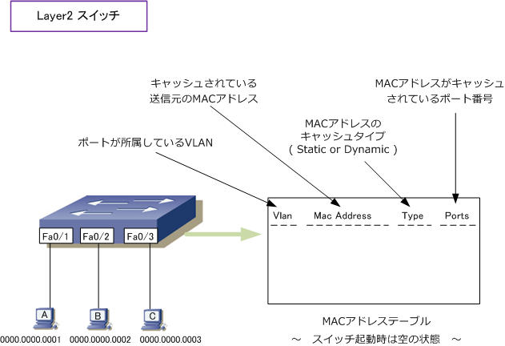
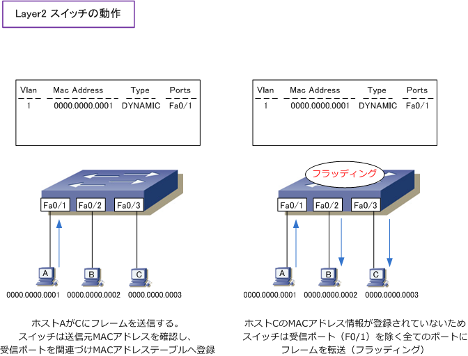
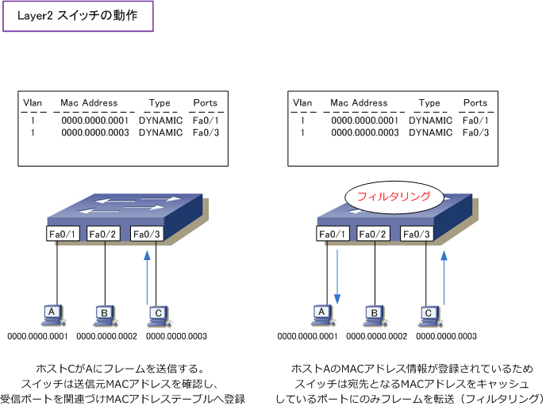
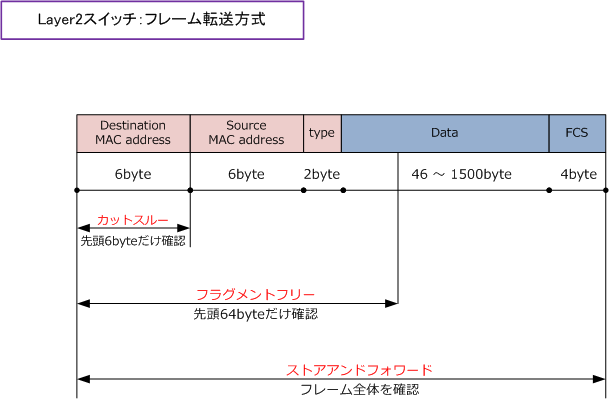
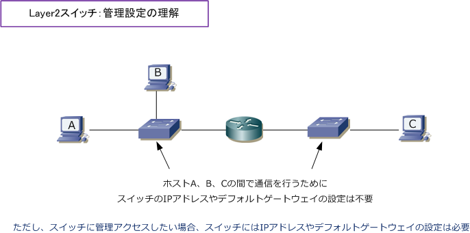
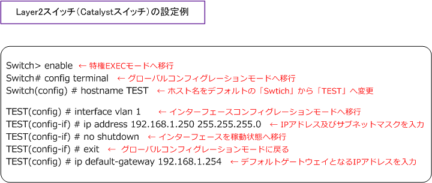

Ethernet LAN - Layer 2 Switch
Layer2スイッチの機能
Layer2スイッチはデータリンク層でMACアドレスを見ながらフレームの宛先を判断して転送を行う機器。 ここではLayer2スイッチが行うフラッディング、フィルタリング、エージング等の機能を見ていきます。 スイッチに電源を入れた起動時では端末がデータの送受信をしていない場合、スイッチ上のMACアドレス テーブルにはどのホストのMACアドレスも学習していない状態です。MACアドレステーブルの見方は以下。

次に、ホストAがCにフレームを送信します。そのフレームの送信元MACアドレスが「0000.0000.0001」 宛先MACアドレスが「0000.0000.0003」となります。スイッチは、そのフレームの送信元MACアドレス、 受信したポート番号、そのポートが所属するVLAN番号の情報をキャッシュします。このMACアドレスの 情報は、スイッチに手動（Static）ではなく自動（Dynamic）でキャッシュなのでタイプはDYNAMICです。
宛先MACアドレス「0000.0000.0003」がキャッシュされていないスイッチは、F0/1を除く全ポートに つまり、受信ポートを除く全てのポートにフレームを転送します。この動作をフラッディングと言います。 ホストCはこのフレームを受信し処理します。一方、ホストBは自分宛ではないのでフレームを破棄します。

続いて、ホストCがAにフレームを送信します。そのフレームの送信元MACアドレスが「0000.0000.0003」 宛先MACアドレスが「0000.0000.0001」となります。スイッチは先ほど同様に各種情報をキャッシュします。 次に、宛先MACアドレス「0000.0000.0001」がキャッシュされているスイッチは、宛先となるポート(F0/1） にのみフレームを転送します。この動作を フィルタリング と言います。なお、MACエントリの最適化のため、 MACアドレステーブルの情報は、一定時間（Catalystの場合には300秒）通信が発生しなければ削除されます。 この動作をエージングと言います。

Layer2スイッチのフレーム転送方式
スイッチにおけるフレームの転送方式はストアアンドフォワード、カットスルー、フラグメントフリー の3つがあります。スイッチが高性能化している現在、一般的に、どのメーカーのスイッチも転送方式に ストアアンドフォワードを採用しているといえます。Catalystスイッチでもこの方式を採用しています。
| Layer2スイッチの3つのフレーム転送方式 | |
|---|---|
| ストアアンドフォワード | 1つのフレーム全体を受信した後、メモリに蓄積（ストア）してから、FCSによるエラー チェックを行い、問題なければ転送（フォワード）します。他の方式に比べ転送速度が 遅くなりやや高価な機器が必要となるが、通信品質の良いフレームの転送方式。 |
| カットスルー | フレームの先頭6byteだけ(宛先MACアドレスだけ）を読み込み、転送する。他の方式 より転送速度が高速になるが、エラーチェックができないことから通信品質は低下する。 |
| フラグメントフリー | フレームの先頭64byteだけを読み込み、フレームが正常か確認して、問題がある場合 破棄して、正常であれば転送します。カットスルーよりも信頼性が高く、ストアアンド フォワードに比べると転送速度が高速となる。上記の転送方式の中間のような方式。 |

Layer2スイッチの管理設定
下図の通り、Layer2スイッチにIPアドレスやデフォルトゲートウェイを設定していなくても、スイッチに 接続するホストやルータは問題なく通信できますが、スイッチのステータス確認や設定変更を行いたい場合 に、スイッチにアクセスするためには、IPアドレスやデフォルトゲートウェイを設定する必要があります。

以下で、Catalystスイッチの管理設定の基本であるホスト名、IPアドレス、デフォルトゲートウェイの 設定を紹介します。以下の設定により、ホスト名を 「TEST」、管理IPアドレスとしてinterface vlan 1 に「192.168.1.250」、デフォルトゲートウェイとして「192.168.1.254」がコンフィグ設定されます。
